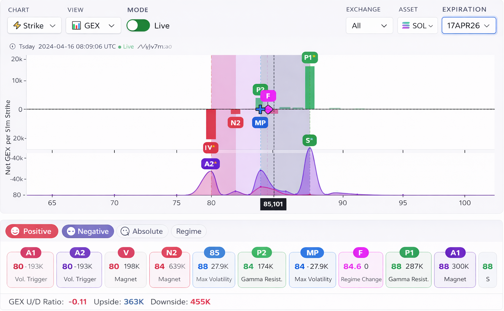

Taegliche Analyse von BTC, ETH und SOL
Ein kompakter, aber vollstaendiger Blick auf die drei wichtigsten Instrumente ohne verstreute Meinungen.
BTC / ETH / SOL · taegliche Marktkarte
Wichtige Level, Szenarien, Risiko und Tageslogik in einer fokussierten Marktkarte. BTC, ETH und SOL werden ueber Gamma-Regime, Optionslevel und nahe Verfaelle gelesen, damit sichtbar wird, wo der Preis stabilisieren kann, wo Beschleunigung wahrscheinlich ist und welche Zonen die Sitzung wirklich praegen.
Prognosen erscheinen jeden Tag nach 08:00 GMT.
Was es ist
Alpha Four Desk ist taegliche Krypto-Marktanalyse fuer Trader, die eine ruhige und strukturierte Sicht auf BTC, ETH und SOL brauchen. Prognosen erscheinen jeden Tag nach 08:00 GMT. Statt Meinungsrauschen erhalten Sie eine Szenariokarte fuer den Tag: Schluessellevels, die Arbeitszone des Szenarios und die Bedingungen, unter denen es seine Kraft behaelt oder verliert.
Das Ergebnis ist keine vage Vorhersage, sondern ein strukturierter Blick auf Tagesregime und Schluessellevels: wo das Szenario gueltig bleibt, wo Kampf wahrscheinlich ist und wo die Struktur eine Anpassung verlangt.

Fuer wen
Fuer Intraday-Trader, die eine klare Tageskarte ohne zusaetzlichen Laerm brauchen.
Fuer Positionstrader, die Szenarien sehen wollen, statt auf jede Kerze zu reagieren.
Fuer private Investoren und Teams, denen Levels, Kontext und der Punkt des Szenariobruchs wichtig sind.
Inhalt
Nicht nur ein weiterer Marktueberblick, sondern eine Szenariokarte des Tages: Schluessellevels, die Arbeitszone des Szenarios, Risiko und der Punkt, an dem die Struktur bricht.
Ein kompakter, aber vollstaendiger Blick auf die drei wichtigsten Instrumente ohne verstreute Meinungen.
Attraktions-, Abweisungs- und Szenariobruch-Zonen, die fuer die aktuelle Sitzung relevant sind.
Eine Karte moeglicher Verlaeufe: Basisszenario, alternatives Szenario und Uebergangsbedingungen.
Sie sehen, wo das Szenario noch gueltig ist und wo es nicht mehr verteidigt werden sollte.
Wir zeigen nicht nur die Levels, sondern auch, warum diese Zonen heute wichtig sind.
Am Ende des Tages wird der Plan mit dem verglichen, was der Markt tatsaechlich gemacht hat.
Unterschied
Alpha Four Desk versucht nicht, den Markt zu uebertoenen. Die Analyse ist so aufgebaut, dass ein Trader sofort die Struktur des Tages sieht: wo Druck liegt, welche Levels wirklich zaehlen, welches Szenario das Basisszenario ist und an welchem Punkt man es nicht mehr verteidigen sollte.
Statt eines Stroms lauter Meinungen erhalten Sie eine Szenariokarte, in der jede Beobachtung an Level, Regime und Szenario gebunden ist. Das nimmt unnoetiges Rauschen heraus und erlaubt es, den Markt ueber klare Logik statt ueber zufaellige Emotionen innerhalb einer Kerze zu lesen.
Dieser Ansatz ist nicht nur fuer den Einstieg nuetzlich, sondern fuer die Disziplin waehrend der gesamten Sitzung. Er zeigt im Voraus, wo der Preis bremsen kann, wo Bewegung sich beschleunigen kann und wo die Idee ihre Kraft verliert und ueberarbeitet werden muss.
Jede Schlussfolgerung ist an Marktregime, Level und Preislogik gebunden und nicht an einen zufaelligen Intraday-Impuls.
Der Bericht enthaelt nur, was heute bei der Arbeit hilft: Kontext, Schluesselzonen, Szenario, Risiko und den Punkt, an dem das Szenario seine Gueltigkeit verliert.
Zuerst entsteht eine Karte der wahrscheinlichsten Wege, dann die Bedingungen fuer Bestaetigung und den Szenariobruch. So laesst sich Disziplin leichter halten.
Methode
Die Optionsstruktur des Marktes hilft dabei, jene Zonen zu erkennen, in denen der Preis sein Verhalten am haeufigsten aendert. Es geht nicht um zufaellige Linien im Chart, sondern um Schluessellevels, an denen Dealer-Hedging und die Konzentration der Options-Exposure die Bewegung spuerbar beeinflussen.
Einige Levels wirken wie Magnet und Preisstabilisator. Andere wirken wie eine Barriere, nach deren Bruch sich die Bewegung stark beschleunigen kann. Genau deshalb neigt der Markt an manchen Tagen zu Range und Rueckkehr zum Mittelwert, waehrend er an anderen zu Impulsbewegung und Level-Bruechen neigt.
Fuer Trader ist das wichtig, weil solche Zonen im Voraus zeigen, wo der Preis bremsen kann, wo Kampf wahrscheinlich ist und wo das Szenario nicht mehr funktioniert. So sieht man den Markt nicht als Chaos, sondern als Struktur: mit Regime, Levels, Szenarien und klaren Risikopunkten.
Darauf basiert die taegliche Szenariokarte fuer BTC, ETH und SOL. Zuerst wird das Marktregime bestimmt, dann werden die Schluessellevels markiert, danach entstehen Basisszenario und Alternativszenario, das Risiko wird gesetzt und der Punkt des Szenariobruchs benannt.
Zuerst wird bestimmt, ob der Markt eher zur Stabilisierung oder zur Beschleunigung der Bewegung neigt.
Danach werden die Zonen markiert, an denen der Preis am haeufigsten verlangsamt, haelt oder das Szenario bricht.
Anschliessend werden der Basisplan und der alternative Plan fuer die Preisbewegung aufgebaut.
Am Ende wird der Punkt festgelegt, ab dem das Szenario nicht mehr als gueltig gilt.
Beispielkarte
Demodaten zeigen die Struktur des Berichts. Reale Werte werden in der taeglichen Analyse aktualisiert.
Premium-Abo
Erweiterter analytischer Breakdown fuer jedes Instrument: Szenario, Levels, Risiko, Punkte der Invalidierung und Kontext zu den naechsten Verfaellen.
ETH Futures/Spot + Optionen · 16APR26 (24h DTE, alle Laufzeiten)
Preis2,316
A12,350 (0DTE) / 2,300 gesamt
Flip2,317 (0DTE) / 2,014 gesamt
Regimepositives Gamma
Das Basisszenario ist Re-Akkumulation ueber 2,300 und Arbeit in den oberen Intraday-Cluster 2,325-2,350. ETH wirkt nicht schwach: Das Gesamtregime ist positiv, gesamt A1 liegt bereits unter dem Preis, und der lokale Tagesmagnet befindet sich darueber. Das schafft einen kontrollierten Aufwaerts-Bias, bedeutet aber keinen pausenlosen Trend.
EntryArbeit von der Kaeuferseite: 2,308-2,318
Stop2,294
SzenariobruchStuendliche Akzeptanz unter 2,290
ZieleTP1: 2,325 · TP2: 2,350 · TP3: 2,400
RisikoModerat. Chance/Risiko liegt etwa bei 1:1.5-1:2
2,300 - gesamt A1 und untere Stuetze des Tages
2,317 - 0DTE Flip
2,350 - obere Szenariozone
1. Beim Test von 2,300-2,310: Wachstum passiver Bids und keine stabile Fortsetzung nach unten nach Market-Selling.
2. Beim Anlauf an 2,317-2,325: Wenn Verkaeufer den Preis nicht schnell unter Flip zurueckbringen koennen, steigt die Chance auf einen Move zu 2,350 deutlich.
Im positiven Gamma-Regime glaetten Dealer Schwankungen und halten den Markt um starke Optionsknoten.
P/C Ratio: 0.34 - moderat bullischer Bias.
TOTAL: 2,300 / 2,400 / 2,500
0DTE: 2,317 / 2,350
Laufzeitenstruktur: Nahe Verfaelle stuetzen Arbeit oberhalb, implizieren aber kontrollierte Verschiebung statt pausenloser Beschleunigung.
Den Markt nicht nur deshalb shorten, weil er bereits gestiegen ist. Solange der Preis ueber 2,300 bleibt, bleibt die Basislogik Range und Rueckkehr nach oben zu 2,350.
SOL Futures/Spot + Optionen · 16APR26 (24h DTE, alle Laufzeiten)
Preis82.9
A182.0 (0DTE) / 80.0 gesamt
Flip82.7 (0DTE) / 85.1 gesamt
Regimenegatives Gamma
Das Basisszenario ist eine gescheiterte Rueckkehr und Kampf in der Zone 82.7-84.0 mit Risiko erneuten Drucks nach unten auf 82 / 80. Ein lokaler Bounce ueber 82.7 allein ueberfuehrt das Asset noch nicht in ein stabiles positives Regime, solange gesamt Flip 85.1 ueber dem Markt bleibt.
EntryArbeit von der Verkaeuferseite: 83.1-83.8
Stop84.4
SzenariobruchStuendliche Akzeptanz ueber 85.1
ZieleTP1: 82.0 · TP2: 80.0 · TP3: 79.0
RisikoErhoeht. Negatives Gamma verstaerkt Impulse, deshalb sollte die Positionsgroesse kleiner und der Stop strenger sein.
82.0 - lokale Tagesstuetze
82.7 - 0DTE Flip
84.0 - naechster oberer Intraday-Knoten
85.1 - Haupttrigger des Regimes
1. Fuer die Short-Idee: Wachstum aggressiver Kaeufe in der Zone 83-84 ohne stabilen Aufwaertstrend und schnelle Rueckkehr unter 82.7.
2. Zur Aufhebung der Short-Idee: Akzeptanz ueber 84.0 mit Halten, kleineren Ruecksetzern und einer Serie sauberer Bid-Faenge in Richtung 85+.
Im negativen Gamma-Regime hedgen Dealer haeufiger in Bewegungsrichtung und verstaerken den bereits gestarteten Impuls.
P/C Ratio: -0.29 - moderat bearischer Bias.
TOTAL: Gesamttrigger des Regimes = 85.1
0DTE: 82 / 82.7 / 84
Laufzeitenstruktur: Die vordere Kurve erlaubt einen Bounce, liefert aber nicht dieselbe starke obere Stuetze wie bei BTC/ETH.
SOL sollte nicht nach denselben Regeln gelesen werden wie BTC und ETH. Solange der Markt unter 85.1 bleibt, bleibt die Basislogik ein taktischer Richtungs-Bias.
Prognose vs. Fakt
Jeden Abend gleichen wir das Morgenszenario mit dem ab, was der Markt tatsächlich gemacht hat. Ohne Retusche: ein Teiltreffer ist ein Teiltreffer.
Halten von 74.500–75.000 und Rückkehr zu 75.554
Halten von 2.275–2.300 und Rückkehr zu 2.345
Lokale Rückkehr zu 85,0–86,0
Beste Tagesanalyse — SOL. Arbeitende Idee bei BTC. Schwächere Umsetzung bei ETH.
Die abendliche Prognose-vs.-Fakt-Auswertung ist im Premium-Abo enthalten.
Glossar
Kurze Definitionen der Begriffe, die in den taeglichen Berichten verwendet werden.
Gamma-Exposure von Optionen: Bereich, in dem Dealer-Hedging die Preisbewegung daempfen oder verstaerken kann.
Das Level, an dem sich das Gamma-Regime aendert.
Der naechste Preismagnet und Schluesselpunkt fuer das Tagesszenario.
Ein Regime, in dem Hedging Bewegungen oft daempft und Range-Verhalten stuetzt.
Ein Regime, in dem Hedging Bewegungen verstaerken und Richtungsimpulse stuetzen kann.
Das Level, ab dem das Szenario nicht mehr als gueltig gilt.
Preise
Basic ist ein starker Einstiegspunkt fuer das taegliche Marktbild. Premium ist das Hauptformat fuer tiefere Logik, Risiko, alternatives Szenario und den Vergleich Prognose gegen Realitaet. Prognosen erscheinen jeden Tag nach 08:00 GMT.
Basic
Ein kompakter taeglicher Bericht fuer eigenstaendige Arbeit: Schluessellevel, Basisszenario und Punkt des Szenariobruchs.
Premium
Das Hauptprodukt von Alpha Four Desk: tiefere Szenarioarbeit fuer jedes Instrument mit Logik, Risiko und Bedingungen zur Plananpassung.
Der Zugang wird ueber den Telegram-Bot @A4DeskAccessBot angefragt: Waehlen Sie einen Tarif, und der Bot oeffnet die Anfrage. Fuer direkten Kontakt: @A4Desk. Prognosen erscheinen jeden Tag nach 08:00 GMT.
FAQ
Nein. Das ist szenariobasierte Analyse: Levels, Wahrscheinlichkeiten, Kontext, Risiko und Szenariobruch. Die endgueltige Entscheidung trifft immer der Nutzer.
Fuer Intraday- und Positionstrader, die eine ruhige taegliche Karte fuer BTC, ETH und SOL brauchen.
Waehlen Sie Basic oder Premium und klicken Sie auf "In Telegram anfragen". Der Bot @A4DeskAccessBot oeffnet die Anfrage.
Prognose und Marktkarte werden taeglich nach 08:00 GMT veroeffentlicht.
Nein. Das Material ist analytisch und informativ und stellt keine individuelle Anlageberatung dar.